Common pitfalls in the interpretation of coefficients of linear models
This example will provide some hints in interpreting coefficient in linear models, pointing at problems that arise when either the linear model is not appropriate to describe the dataset, or when features are correlated.
Note📝
Keep in mind that the features and the outcomeare in general the result of a data generating process that is unknown to us. Machine learning models are trained to approximate the unobserved mathematical function that links to from sample data.
We will use data from the “Current Population Survey” from 1985 to predict wage as a function of various features such as experience, age, or education.
import matplotlib.pyplot as plt
import numpy as np
import pandas as pd
import scipy as sp # ❓
import seaborn as sns
The dataset:wages#
as_frame: data as pd.df
from sklearn.datasets import fetch_openml
survey = fetch_openml(data_id=534, as_frame=True)
X=survey.data[survey.feature_names]
X.describe(include="all")
| EDUCATION | SOUTH | SEX | EXPERIENCE | UNION | AGE | RACE | OCCUPATION | SECTOR | MARR | |
|---|---|---|---|---|---|---|---|---|---|---|
| count | 534.000000 | 534 | 534 | 534.000000 | 534 | 534.000000 | 534 | 534 | 534 | 534 |
| unique | NaN | 2 | 2 | NaN | 2 | NaN | 3 | 6 | 3 | 2 |
| top | NaN | no | male | NaN | not_member | NaN | White | Other | Other | Married |
| freq | NaN | 378 | 289 | NaN | 438 | NaN | 440 | 156 | 411 | 350 |
| mean | 13.018727 | NaN | NaN | 17.822097 | NaN | 36.833333 | NaN | NaN | NaN | NaN |
| std | 2.615373 | NaN | NaN | 12.379710 | NaN | 11.726573 | NaN | NaN | NaN | NaN |
| min | 2.000000 | NaN | NaN | 0.000000 | NaN | 18.000000 | NaN | NaN | NaN | NaN |
| 25% | 12.000000 | NaN | NaN | 8.000000 | NaN | 28.000000 | NaN | NaN | NaN | NaN |
| 50% | 12.000000 | NaN | NaN | 15.000000 | NaN | 35.000000 | NaN | NaN | NaN | NaN |
| 75% | 15.000000 | NaN | NaN | 26.000000 | NaN | 44.000000 | NaN | NaN | NaN | NaN |
| max | 18.000000 | NaN | NaN | 55.000000 | NaN | 64.000000 | NaN | NaN | NaN | NaN |
X.head()
| EDUCATION | SOUTH | SEX | EXPERIENCE | UNION | AGE | RACE | OCCUPATION | SECTOR | MARR | |
|---|---|---|---|---|---|---|---|---|---|---|
| 0 | 8 | no | female | 21 | not_member | 35 | Hispanic | Other | Manufacturing | Married |
| 1 | 9 | no | female | 42 | not_member | 57 | White | Other | Manufacturing | Married |
| 2 | 12 | no | male | 1 | not_member | 19 | White | Other | Manufacturing | Unmarried |
| 3 | 12 | no | male | 4 | not_member | 22 | White | Other | Other | Unmarried |
| 4 | 12 | no | male | 17 | not_member | 35 | White | Other | Other | Married |
Target for prediction: the wage, float number $/hour.
y = survey.target.values.ravel()
survey.target.head()
0 5.10
1 4.95
2 6.67
3 4.00
4 7.50
Name: WAGE, dtype: float64
from sklearn.model_selection import train_test_split
X_train, X_test, y_train, y_test = train_test_split(
X, y, random_state=42,
)
First, let’s get some insights by looking at the variable distributions and at the pairwise relationships between them. (only numerical var.)
train_dataset = X_train.copy()
train_dataset.insert(0, 'WAGE', y_train)
sns.pairplot(train_dataset, kind='reg', diag_kind='kde')
<seaborn.axisgrid.PairGrid at 0x22266590b30>
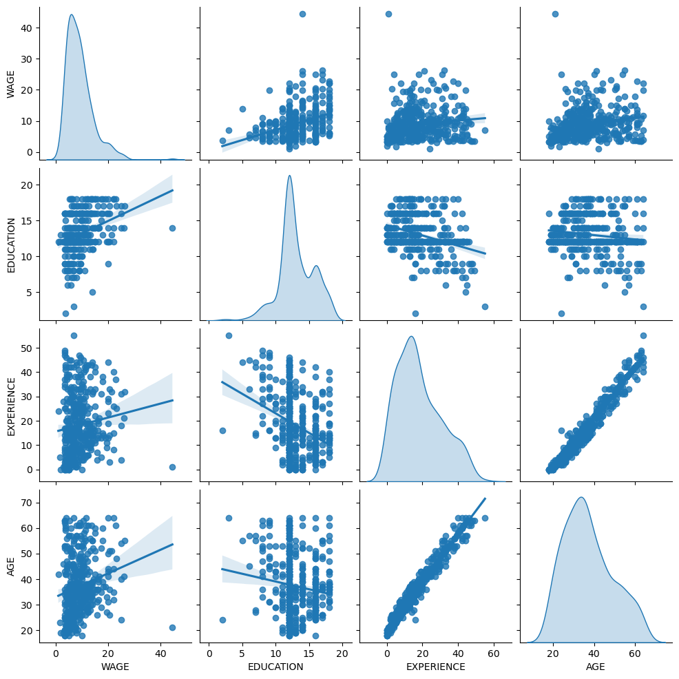
📈
Wage distribution has a long tail. We should take its log-alg to turn it into a approximately normal distribution. ❓Only target is needed for normal? What’s the linear model 假设？如果是离散呢？
The WAGE is increasing when EDUCATION is increasing. (A marginal dependence)
Experience and age are strongly linearly correlated.
The machine-learning pipeline#
To design pipeline, first check the type of the data.
survey.data.info()
<class 'pandas.core.frame.DataFrame'>
RangeIndex: 534 entries, 0 to 533
Data columns (total 10 columns):
# Column Non-Null Count Dtype
--- ------ -------------- -----
0 EDUCATION 534 non-null int64
1 SOUTH 534 non-null category
2 SEX 534 non-null category
3 EXPERIENCE 534 non-null int64
4 UNION 534 non-null category
5 AGE 534 non-null int64
6 RACE 534 non-null category
7 OCCUPATION 534 non-null category
8 SECTOR 534 non-null category
9 MARR 534 non-null category
dtypes: category(7), int64(3)
memory usage: 17.3 KB
🔍 There are different data types.So we need to apply a specific preprocessing for each data type.
category: ont-hot-encode
from sklearn.compose import make_column_transformer
from sklearn.preprocessing import OneHotEncoder
categorical_columns = ["RACE", "OCCUPATION", "SECTOR", "MARR", "UNION", "SEX", "SOUTH"]
numerical_columns = ["EDUCATION", "EXPERIENCE", "AGE"]
preprocessor = make_column_transformer(
(OneHotEncoder(drop='if_binary'), categorical_columns), #if_binary will drop one cate-value, remain another one without dealing
remainder='passthrough',
verbose_feature_names_out=False
)
from sklearn.pipeline import make_pipeline
from sklearn.linear_model import Ridge
from sklearn.compose import TransformedTargetRegressor
model = make_pipeline(
preprocessor,
TransformedTargetRegressor( # 用于对y变换
regressor=Ridge(alpha=1e-10),
func=np.log10, # log化，更加normal
inverse_func=sp.special.exp10 # inverse
)
)
Processing the data#
model.fit(X_train, y_train)
d:\miniconda3\Lib\site-packages\sklearn\compose\_column_transformer.py:1667: FutureWarning:
The format of the columns of the 'remainder' transformer in ColumnTransformer.transformers_ will change in version 1.7 to match the format of the other transformers.
At the moment the remainder columns are stored as indices (of type int). With the same ColumnTransformer configuration, in the future they will be stored as column names (of type str).
To use the new behavior now and suppress this warning, use ColumnTransformer(force_int_remainder_cols=False).
warnings.warn(
Pipeline(steps=[('columntransformer',
ColumnTransformer(remainder='passthrough',
transformers=[('onehotencoder',
OneHotEncoder(drop='if_binary'),
['RACE', 'OCCUPATION',
'SECTOR', 'MARR', 'UNION',
'SEX', 'SOUTH'])],
verbose_feature_names_out=False)),
('transformedtargetregressor',
TransformedTargetRegressor(func=<ufunc 'log10'>,
inverse_func=<ufunc 'exp10'>,
regressor=Ridge(alpha=1e-10)))])In a Jupyter environment, please rerun this cell to show the HTML representation or trust the notebook. On GitHub, the HTML representation is unable to render, please try loading this page with nbviewer.org.
Pipeline(steps=[('columntransformer',
ColumnTransformer(remainder='passthrough',
transformers=[('onehotencoder',
OneHotEncoder(drop='if_binary'),
['RACE', 'OCCUPATION',
'SECTOR', 'MARR', 'UNION',
'SEX', 'SOUTH'])],
verbose_feature_names_out=False)),
('transformedtargetregressor',
TransformedTargetRegressor(func=<ufunc 'log10'>,
inverse_func=<ufunc 'exp10'>,
regressor=Ridge(alpha=1e-10)))])ColumnTransformer(remainder='passthrough',
transformers=[('onehotencoder',
OneHotEncoder(drop='if_binary'),
['RACE', 'OCCUPATION', 'SECTOR', 'MARR',
'UNION', 'SEX', 'SOUTH'])],
verbose_feature_names_out=False)['RACE', 'OCCUPATION', 'SECTOR', 'MARR', 'UNION', 'SEX', 'SOUTH']
OneHotEncoder(drop='if_binary')
['EDUCATION', 'EXPERIENCE', 'AGE']
passthrough
TransformedTargetRegressor(func=<ufunc 'log10'>, inverse_func=<ufunc 'exp10'>,
regressor=Ridge(alpha=1e-10))Ridge(alpha=1e-10)
Ridge(alpha=1e-10)
from sklearn.metrics import PredictionErrorDisplay, median_absolute_error
mae_train = median_absolute_error(y_train, model.predict(X_train))
y_pred = model.predict(X_test)
mae_test = median_absolute_error(y_test, y_pred)
scores = {
"MedAE on training set": f"{mae_train:.2f} $/hour",
"MedAE on testing set": f"{mae_test:.2f} $/hour",
}
print(scores)
{'MedAE on training set': '2.14 $/hour', 'MedAE on testing set': '2.22 $/hour'}
_, ax = plt.subplots(figsize=(5, 5))
display = PredictionErrorDisplay.from_predictions(
y_test, # actual
y_pred, # pred
kind="actual_vs_predicted", # picture type
ax=ax, #
scatter_kwargs={"alpha": 0.5} #
)
ax.set_title("Ridge model, small regularization(1e-10)")
for name, score in scores.items(): # 通过空白图形添加图例
ax.plot([],[]," ", label =f"{name}:{score}")
ax.legend(loc="upper left")
plt.tight_layout()
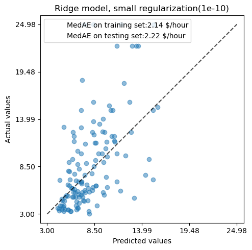
Then, we interpret the coef
Interpreting coefficients: scale matters#
First, we can look at the coefficient of the every feature.
model
Pipeline(steps=[('columntransformer',
ColumnTransformer(remainder='passthrough',
transformers=[('onehotencoder',
OneHotEncoder(drop='if_binary'),
['RACE', 'OCCUPATION',
'SECTOR', 'MARR', 'UNION',
'SEX', 'SOUTH'])],
verbose_feature_names_out=False)),
('transformedtargetregressor',
TransformedTargetRegressor(func=<ufunc 'log10'>,
inverse_func=<ufunc 'exp10'>,
regressor=Ridge(alpha=1e-10)))])In a Jupyter environment, please rerun this cell to show the HTML representation or trust the notebook. On GitHub, the HTML representation is unable to render, please try loading this page with nbviewer.org.
Pipeline(steps=[('columntransformer',
ColumnTransformer(remainder='passthrough',
transformers=[('onehotencoder',
OneHotEncoder(drop='if_binary'),
['RACE', 'OCCUPATION',
'SECTOR', 'MARR', 'UNION',
'SEX', 'SOUTH'])],
verbose_feature_names_out=False)),
('transformedtargetregressor',
TransformedTargetRegressor(func=<ufunc 'log10'>,
inverse_func=<ufunc 'exp10'>,
regressor=Ridge(alpha=1e-10)))])ColumnTransformer(remainder='passthrough',
transformers=[('onehotencoder',
OneHotEncoder(drop='if_binary'),
['RACE', 'OCCUPATION', 'SECTOR', 'MARR',
'UNION', 'SEX', 'SOUTH'])],
verbose_feature_names_out=False)['RACE', 'OCCUPATION', 'SECTOR', 'MARR', 'UNION', 'SEX', 'SOUTH']
OneHotEncoder(drop='if_binary')
['EDUCATION', 'EXPERIENCE', 'AGE']
passthrough
TransformedTargetRegressor(func=<ufunc 'log10'>, inverse_func=<ufunc 'exp10'>,
regressor=Ridge(alpha=1e-10))Ridge(alpha=1e-10)
Ridge(alpha=1e-10)
feature_names = model[:-1].get_feature_names_out() # model is a pipeline
coefs = pd.DataFrame(
model[-1].regressor_.coef_,
columns=['Coefficients'],
index=feature_names
)
coefs
| Coefficients | |
|---|---|
| RACE_Hispanic | -0.013527 |
| RACE_Other | -0.009084 |
| RACE_White | 0.022586 |
| OCCUPATION_Clerical | 0.000063 |
| OCCUPATION_Management | 0.090545 |
| OCCUPATION_Other | -0.025084 |
| OCCUPATION_Professional | 0.071981 |
| OCCUPATION_Sales | -0.046619 |
| OCCUPATION_Service | -0.091036 |
| SECTOR_Construction | -0.000159 |
| SECTOR_Manufacturing | 0.031294 |
| SECTOR_Other | -0.030986 |
| MARR_Unmarried | -0.032405 |
| UNION_not_member | -0.117154 |
| SEX_male | 0.090808 |
| SOUTH_yes | -0.033823 |
| EDUCATION | 0.054699 |
| EXPERIENCE | 0.035005 |
| AGE | -0.030867 |
⭐
The AGE coef is expressed in “dollars/hour per living years”
The EDUCATION coef is expressed in “dollars/hour per years of education”
This means that: an increase of year in AGE means a decrease of dollars/hour, while an increase of year in EDUCATION means an increase of dollars/hour.categorical variables (as UNION or SEX) are adimensional numbers taking either the value 0 or 1. Their coefficients are expressed in dollars/hour.
So, we cannot compare/calculate the different coefficients that have different scales.
This is more better if we plot the coefficients
coefs.plot.barh(figsize=(9,7))
plt.title("Ridge model, small regularization")
plt.xlabel("raw coefficient values")
plt.axvline(x = 0, color='.1')
<matplotlib.lines.Line2D at 0x2226b816360>
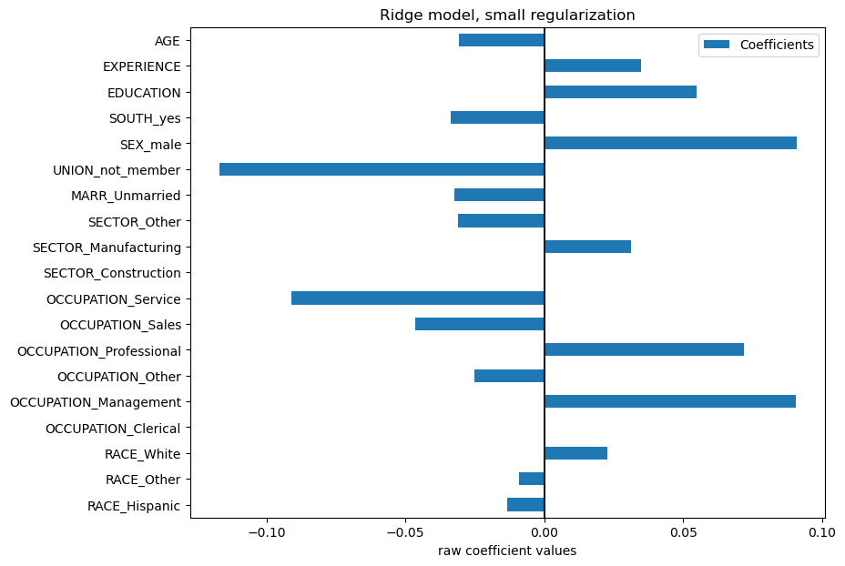
Indeed, from the plot above the most important factor appears to be UNION. Even if our intuition it should be EXPERIENCE.
Futhermore, we can compare coefficients in some way: std.dev.. It’s better
model[:-1] # 保留预处理部分
Pipeline(steps=[('columntransformer',
ColumnTransformer(remainder='passthrough',
transformers=[('onehotencoder',
OneHotEncoder(drop='if_binary'),
['RACE', 'OCCUPATION',
'SECTOR', 'MARR', 'UNION',
'SEX', 'SOUTH'])],
verbose_feature_names_out=False))])In a Jupyter environment, please rerun this cell to show the HTML representation or trust the notebook. On GitHub, the HTML representation is unable to render, please try loading this page with nbviewer.org.
Pipeline(steps=[('columntransformer',
ColumnTransformer(remainder='passthrough',
transformers=[('onehotencoder',
OneHotEncoder(drop='if_binary'),
['RACE', 'OCCUPATION',
'SECTOR', 'MARR', 'UNION',
'SEX', 'SOUTH'])],
verbose_feature_names_out=False))])ColumnTransformer(remainder='passthrough',
transformers=[('onehotencoder',
OneHotEncoder(drop='if_binary'),
['RACE', 'OCCUPATION', 'SECTOR', 'MARR',
'UNION', 'SEX', 'SOUTH'])],
verbose_feature_names_out=False)['RACE', 'OCCUPATION', 'SECTOR', 'MARR', 'UNION', 'SEX', 'SOUTH']
OneHotEncoder(drop='if_binary')
['EDUCATION', 'EXPERIENCE', 'AGE']
passthrough
X_train_preprocessed = pd.DataFrame(
model[:-1].transform(X_train), columns=feature_names
)
# 1. compute std.dev. for each feature
# 2. plot horizontal bar chart
X_train_preprocessed.std(axis=0).plot.barh(figsize=(9,7)) # ❓.plot
plt.title("Feature ranges")
plt.xlabel("Std. dev. of feature values")
print(X_train_preprocessed.std(axis=0))
RACE_Hispanic 0.223312
RACE_Other 0.336725
RACE_White 0.386740
OCCUPATION_Clerical 0.398611
OCCUPATION_Management 0.319421
OCCUPATION_Other 0.449561
OCCUPATION_Professional 0.396697
OCCUPATION_Sales 0.246835
OCCUPATION_Service 0.355048
SECTOR_Construction 0.212972
SECTOR_Manufacturing 0.382570
SECTOR_Other 0.418105
MARR_Unmarried 0.475964
UNION_not_member 0.388784
SEX_male 0.498814
SOUTH_yes 0.449561
EDUCATION 2.629689
EXPERIENCE 12.394068
AGE 11.779059
dtype: float64
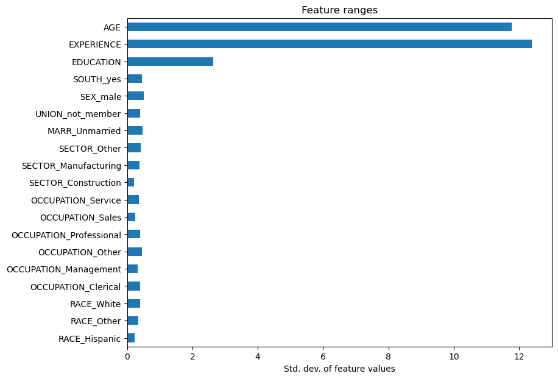
$$
y = \sum{coef_i \times X_i} =
\sum{(coef_i \times std_i) \times (X_i / std_i)}
$$
Multiplying the coefficients by the standard deviation of the related feature would reduce all the coefficients to the same unit of measure.
In that way, we emphasize that the greater the variance of a feature, the larger the weight of the corresponding coefficient on the output, all else being equal.
coefs = pd.DataFrame(
model[-1].regressor_.coef_ * X_train_preprocessed.std(axis=0),
columns=["Coefficient importance"],
index=feature_names
)
coefs.plot(kind="barh", figsize=(9,7)) # ❓
plt.xlabel("Coefficient values corrected by the feature's std. dev.")
plt.title('Ridge model, small regularization')
Text(0.5, 1.0, 'Ridge model, small regularization')
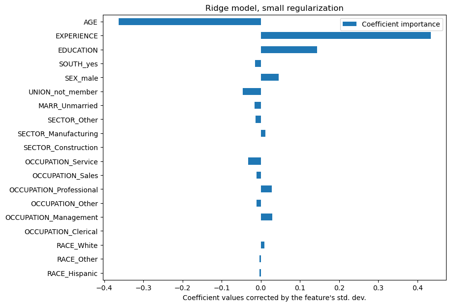
Now, the coefficients have been scaled, we can safely compare them.
📊 The plot tell us about dependencies between a feature and target when other features remain constant, i.e.,conditional dependencies.
Age ↑， WAGE ↓
Experience ↓，WAGE ↑..
🔍Marginal dependencies vs. Conditional dependencies
Marginal dependencies ：pairplot.
Just plot a feature and target, without considering other features, without fixing other features.
Just a scatter, if exist two features have strong linear realationship, it would be disappearing in the fiting.
It can’t compare the different/compute different features, because they have different scales.
Conditional dependencies
By the std.dev, feature values are all in normal distribution.
Because they have same scales, we can control some features, and conclude the relationship between the a feature and target by the coefficients
边界依赖（boundary dependence） 通常与分类特征（Label Encoding / One-Hot Encoding）无关，主要影响的是连续数值特征。
import numpy as np
import matplotlib.pyplot as plt
X_train_original = pd.DataFrame(
model[:-1].transform(X_train), columns=feature_names
)
X_train_numerical_original = X_train[numerical_columns]
X_train_numerical_original.hist(bins=30, figsize=(10, 6), alpha=0.7)
plt.suptitle("Feature Distributions", fontsize=14) # 添加总标题
plt.tight_layout() # 自动调整布局，防止重叠
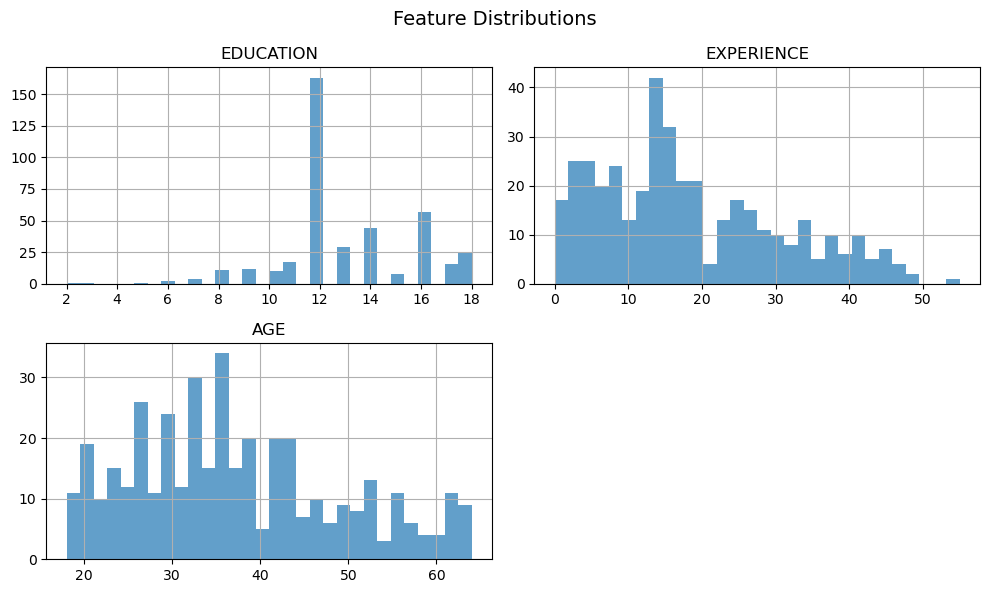
from sklearn.preprocessing import StandardScaler
import seaborn as sns
import matplotlib.pyplot as plt
sns.set() # 设置 Seaborn 风格
# 标准化数据
scaler = StandardScaler()
X_train_numerical_standardized = pd.DataFrame(
scaler.fit_transform(X_train_numerical_original),
columns=X_train_numerical_original.columns
)
# 打印标准化后的数据描述
print(X_train_numerical_standardized.describe())
# 使用 Seaborn 绘制核密度估计图
plt.figure(figsize=(10, 6)) # 设置图像大小
for col in X_train_numerical_standardized.columns:
sns.kdeplot(X_train_numerical_standardized[col], label=col, fill=True, alpha=0.5)
# 添加图例
plt.legend()
plt.title("Standardized Feature Distributions (KDE)")
plt.xlabel("Value (Standardized)")
plt.ylabel("Density")
plt.show()
EDUCATION EXPERIENCE AGE
count 4.000000e+02 4.000000e+02 4.000000e+02
mean 4.218847e-17 -1.154632e-16 -1.243450e-16
std 1.001252e+00 1.001252e+00 1.001252e+00
min -4.205377e+00 -1.469476e+00 -1.634178e+00
25% -3.978831e-01 -7.626085e-01 -7.841503e-01
50% -3.978831e-01 -2.173111e-01 -1.466297e-01
75% 7.443650e-01 6.309293e-01 6.608963e-01
max 1.886613e+00 2.973689e+00 2.275948e+00
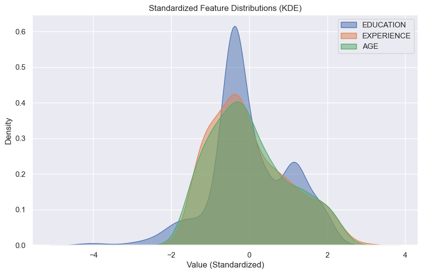
📈 可以看到，数据归一化了。可以进行比较。
Interpreting coefficients: being cautious about causality#
Checking the variability of the coefficients#
We can check the coefficient variability through cross-validation: it is a form of data perturbation (related to resampling).
from sklearn.model_selection import RepeatedKFold, cross_validate
# 数据分为5块，4块训练，1块验证，5次随机划分。 共25次训练
cv =RepeatedKFold(n_splits=5,n_repeats=5,random_state=42)
cv_model = cross_validate(
model,
X, # 🗼not to split trainset and testset
y, #
cv = cv,
return_estimator=True, # return every cross.val. model
n_jobs=2 # CPU kernels
)
coefs = pd.DataFrame(
[
est[-1].regressor_.coef_ * est[:-1].transform(X.iloc[train_idx]).std(axis=0) # ❓
for est, (train_idx, _) in zip(cv_model["estimator"], cv.split(X, y))
],
columns=feature_names,
)
coefs
| RACE_Hispanic | RACE_Other | RACE_White | OCCUPATION_Clerical | OCCUPATION_Management | OCCUPATION_Other | OCCUPATION_Professional | OCCUPATION_Sales | OCCUPATION_Service | SECTOR_Construction | SECTOR_Manufacturing | SECTOR_Other | MARR_Unmarried | UNION_not_member | SEX_male | SOUTH_yes | EDUCATION | EXPERIENCE | AGE | |
|---|---|---|---|---|---|---|---|---|---|---|---|---|---|---|---|---|---|---|---|
| 0 | -0.003547 | -0.002683 | 0.009371 | 0.001318 | 0.028025 | -0.011708 | 0.026227 | -0.012392 | -0.029905 | 0.000531 | 0.010855 | -0.012848 | -0.013510 | -0.044088 | 0.042819 | -0.014302 | 0.140134 | 0.428015 | -0.359926 |
| 1 | -0.004324 | -0.003126 | 0.011024 | 0.000345 | 0.028015 | -0.019068 | 0.027272 | -0.014724 | -0.024661 | 0.008946 | 0.001638 | -0.020583 | -0.009265 | -0.033194 | 0.053443 | -0.021211 | 0.143335 | 0.363851 | -0.297910 |
| 2 | -0.003953 | -0.002537 | 0.009548 | -0.001528 | 0.029334 | -0.008418 | 0.027596 | -0.015768 | -0.029650 | -0.002515 | 0.010161 | -0.005142 | -0.012055 | -0.028925 | 0.052517 | -0.023798 | 0.143826 | 0.336860 | -0.267547 |
| 3 | -0.000364 | -0.005721 | 0.007178 | 0.001672 | 0.027472 | -0.001754 | 0.025711 | -0.020820 | -0.024916 | 0.001060 | 0.006861 | -0.009584 | -0.013215 | -0.039093 | 0.036862 | -0.017592 | 0.140537 | 0.300777 | -0.240345 |
| 4 | -0.010845 | 0.002542 | 0.016297 | 0.001056 | 0.027727 | -0.010477 | 0.030384 | -0.020990 | -0.025224 | 0.001973 | 0.010445 | -0.015178 | -0.016504 | -0.031963 | 0.049138 | -0.014773 | 0.040596 | -0.113693 | 0.155950 |
| 5 | -0.005629 | -0.002366 | 0.013031 | 0.000768 | 0.022771 | -0.004603 | 0.025656 | -0.018302 | -0.023109 | -0.000421 | 0.010218 | -0.010242 | -0.007597 | -0.042044 | 0.048810 | -0.024416 | 0.134967 | 0.339571 | -0.276015 |
| 6 | -0.004407 | 0.000180 | 0.007086 | 0.002306 | 0.031286 | -0.012382 | 0.031863 | -0.021071 | -0.030438 | 0.005467 | 0.000655 | -0.012617 | -0.017980 | -0.029244 | 0.048276 | -0.023755 | 0.129513 | 0.320647 | -0.264162 |
| 7 | -0.008075 | -0.000006 | 0.014324 | -0.001771 | 0.027391 | -0.010108 | 0.028667 | -0.013261 | -0.028958 | 0.000684 | 0.008237 | -0.010225 | -0.017772 | -0.025015 | 0.046183 | -0.019349 | 0.143287 | 0.352175 | -0.284902 |
| 8 | -0.004155 | -0.001227 | 0.008577 | -0.001146 | 0.025286 | -0.014263 | 0.025883 | -0.012527 | -0.022404 | 0.006034 | 0.004666 | -0.016596 | -0.014293 | -0.036369 | 0.048463 | -0.009769 | 0.053734 | -0.090467 | 0.141599 |
| 9 | -0.001297 | -0.007312 | 0.010587 | 0.002648 | 0.033709 | -0.010064 | 0.025086 | -0.019731 | -0.029748 | -0.000851 | 0.014057 | -0.013342 | -0.009216 | -0.043134 | 0.043719 | -0.014417 | 0.145145 | 0.407061 | -0.335449 |
| 10 | -0.009940 | 0.003279 | 0.013165 | 0.000554 | 0.026576 | -0.008791 | 0.026098 | -0.017638 | -0.022492 | 0.001834 | 0.006725 | -0.010924 | -0.024976 | -0.038359 | 0.051910 | -0.019698 | 0.157039 | 0.428816 | -0.356005 |
| 11 | -0.002252 | -0.002837 | 0.007244 | 0.001679 | 0.020322 | -0.005294 | 0.025073 | -0.015208 | -0.023997 | -0.000103 | 0.008871 | -0.009341 | -0.012989 | -0.034210 | 0.048962 | -0.022095 | 0.058421 | -0.058620 | 0.102217 |
| 12 | -0.005313 | -0.003137 | 0.012924 | 0.002531 | 0.032547 | -0.017465 | 0.029505 | -0.018453 | -0.027777 | -0.001061 | 0.012893 | -0.011564 | -0.011750 | -0.038553 | 0.047811 | -0.009735 | 0.129724 | 0.352430 | -0.290426 |
| 13 | -0.004181 | -0.002068 | 0.009618 | -0.003993 | 0.023716 | -0.001176 | 0.025477 | -0.013557 | -0.027894 | 0.005243 | 0.003366 | -0.014092 | -0.005953 | -0.032905 | 0.043113 | -0.020245 | 0.139726 | 0.333526 | -0.272460 |
| 14 | -0.001458 | -0.006257 | 0.009691 | 0.002134 | 0.036901 | -0.018861 | 0.030759 | -0.019748 | -0.032175 | 0.004875 | 0.007174 | -0.017626 | -0.008718 | -0.032055 | 0.044287 | -0.020062 | 0.139138 | 0.366577 | -0.291507 |
| 15 | -0.008833 | 0.001322 | 0.013348 | -0.002228 | 0.028488 | -0.005065 | 0.027567 | -0.023122 | -0.019464 | -0.001144 | 0.013720 | -0.012241 | -0.013670 | -0.040033 | 0.038162 | -0.018886 | 0.045156 | -0.085630 | 0.117481 |
| 16 | 0.002452 | -0.008333 | 0.005023 | 0.006392 | 0.029393 | -0.017524 | 0.019723 | -0.014476 | -0.022811 | 0.005325 | 0.006251 | -0.017698 | -0.015036 | -0.024088 | 0.055806 | -0.013770 | 0.177395 | 0.488673 | -0.401452 |
| 17 | -0.006324 | 0.000620 | 0.010775 | 0.001123 | 0.024153 | -0.005329 | 0.027717 | -0.018711 | -0.026455 | -0.000386 | 0.005349 | -0.005343 | -0.013942 | -0.035774 | 0.051722 | -0.015001 | 0.145423 | 0.377752 | -0.308318 |
| 18 | -0.007587 | 0.001228 | 0.011279 | -0.003284 | 0.026751 | -0.007192 | 0.030107 | -0.013771 | -0.031724 | 0.004902 | 0.004150 | -0.014807 | -0.010808 | -0.034305 | 0.041572 | -0.022058 | 0.135277 | 0.317582 | -0.250570 |
| 19 | -0.002678 | -0.006178 | 0.011713 | 0.000248 | 0.032238 | -0.017239 | 0.031923 | -0.014797 | -0.033465 | 0.001954 | 0.009159 | -0.013939 | -0.012295 | -0.042269 | 0.047756 | -0.020191 | 0.123102 | 0.340142 | -0.280639 |
| 20 | -0.003821 | 0.000415 | 0.006357 | -0.003378 | 0.022062 | -0.010347 | 0.026610 | -0.011022 | -0.024951 | 0.002213 | 0.007286 | -0.012448 | -0.014588 | -0.029341 | 0.042617 | -0.021464 | 0.143980 | 0.374929 | -0.299158 |
| 21 | -0.007909 | 0.001257 | 0.012355 | 0.002108 | 0.027473 | -0.010914 | 0.024482 | -0.013701 | -0.031587 | 0.002746 | 0.007131 | -0.013270 | -0.017983 | -0.041563 | 0.046364 | -0.019580 | 0.155083 | 0.438908 | -0.363969 |
| 22 | -0.003882 | -0.005284 | 0.012561 | 0.004544 | 0.030231 | -0.010305 | 0.031694 | -0.021465 | -0.027747 | 0.002661 | 0.005457 | -0.011430 | -0.006885 | -0.036819 | 0.051909 | -0.021740 | 0.047390 | -0.081054 | 0.117287 |
| 23 | -0.002617 | -0.005084 | 0.010619 | -0.003008 | 0.032922 | -0.009639 | 0.025537 | -0.018812 | -0.025447 | 0.002072 | 0.006559 | -0.011251 | -0.017936 | -0.029147 | 0.055219 | -0.015725 | 0.150104 | 0.403093 | -0.334556 |
| 24 | -0.004342 | -0.002384 | 0.009985 | 0.002609 | 0.028045 | -0.012270 | 0.030467 | -0.019980 | -0.024523 | 0.000875 | 0.012573 | -0.015413 | -0.009273 | -0.040075 | 0.040147 | -0.013898 | 0.132858 | 0.323000 | -0.262100 |
plt.figure(figsize=(9,7))
# 散点图
sns.stripplot(
data = coefs,
orient='h', # 水平散点
palette='dark:k', # 黑色
alpha=0.5, # 透明
)
# 箱线图， Q1到Q3的box
sns.boxplot(
data=coefs,
orient='h',
color='cyan', # 青色,
saturation=0.5, # 饱和度
)
plt.axvline(x=0, color='.5')
plt.xlabel("Coefficient importance")
plt.title("Coefficient importance and its variability")
plt.suptitle("Ridge model, small regularization")
Text(0.5, 0.98, 'Ridge model, small regularization')
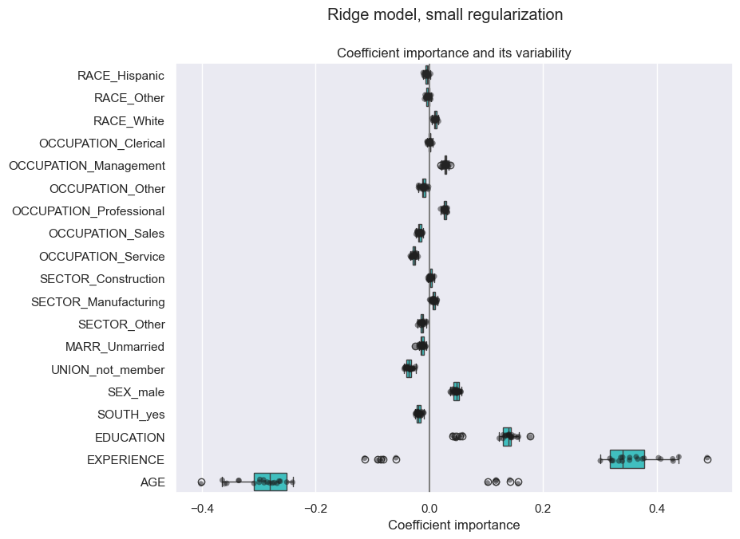
📈 The AGE and EXPERIENCE coefficients are affected by strong variability！
The proplem of the variability of coefficients#
It might be due to the collinearity between the 2 features: as AGE and EXPERIENCE vary together in the data, their effect is difficult to tease apart.
plt.xlabel('AGE coef')
plt.ylabel('EXPERIENCE coef')
plt.grid(True)
plt.xlim(-0.4, 0.5)
plt.ylim(-0.4, 0.5)
plt.scatter(coefs['AGE'], coefs['EXPERIENCE'])
plt.title("Co-variations of coefficients for AGE and EXPERIENCE across folds")
Text(0.5, 1.0, 'Co-variations of coefficients for AGE and EXPERIENCE across folds')
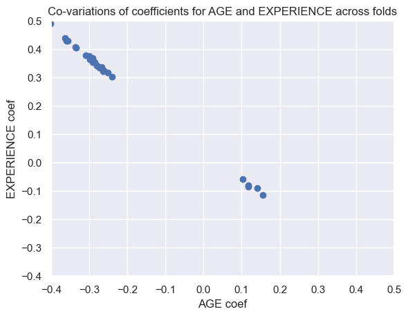
To go further we remove one of the 2 features and check what is the impact on the model stability.
column_to_drop = ["AGE"]
cv_model = cross_validate(
model,
X.drop(columns=column_to_drop),
y,
cv=cv,
return_estimator=True,
n_jobs=2,
)
coefs = pd.DataFrame(
[
est[-1].regressor_.coef_
* est[:-1].transform(X.drop(columns=column_to_drop).iloc[train_idx]).std(axis=0)
for est, (train_idx, _) in zip(cv_model["estimator"], cv.split(X, y))
],
columns=feature_names[:-1],
)
coefs
| RACE_Hispanic | RACE_Other | RACE_White | OCCUPATION_Clerical | OCCUPATION_Management | OCCUPATION_Other | OCCUPATION_Professional | OCCUPATION_Sales | OCCUPATION_Service | SECTOR_Construction | SECTOR_Manufacturing | SECTOR_Other | MARR_Unmarried | UNION_not_member | SEX_male | SOUTH_yes | EDUCATION | EXPERIENCE | |
|---|---|---|---|---|---|---|---|---|---|---|---|---|---|---|---|---|---|---|
| 0 | -0.003593 | -0.002656 | 0.009413 | 0.001098 | 0.027978 | -0.011691 | 0.026713 | -0.012435 | -0.030047 | 0.000570 | 0.010750 | -0.012826 | -0.013150 | -0.044006 | 0.042445 | -0.014454 | 0.060582 | 0.049317 |
| 1 | -0.004357 | -0.003118 | 0.011075 | 0.000167 | 0.027982 | -0.019070 | 0.027711 | -0.014743 | -0.024796 | 0.008999 | 0.001546 | -0.020557 | -0.009005 | -0.033103 | 0.053095 | -0.021342 | 0.076528 | 0.050360 |
| 2 | -0.003993 | -0.002520 | 0.009602 | -0.001678 | 0.029307 | -0.008439 | 0.027962 | -0.015808 | -0.029764 | -0.002507 | 0.010101 | -0.005127 | -0.011796 | -0.028864 | 0.052249 | -0.023900 | 0.081485 | 0.053518 |
| 3 | -0.000412 | -0.005685 | 0.007221 | 0.001503 | 0.027444 | -0.001768 | 0.026057 | -0.020852 | -0.025028 | 0.001081 | 0.006793 | -0.009570 | -0.012939 | -0.039078 | 0.036578 | -0.017688 | 0.086398 | 0.046488 |
| 4 | -0.010846 | 0.002542 | 0.016296 | 0.001057 | 0.027728 | -0.010475 | 0.030385 | -0.020989 | -0.025223 | 0.001973 | 0.010445 | -0.015178 | -0.016504 | -0.031963 | 0.049138 | -0.014773 | 0.073913 | 0.051704 |
| 5 | -0.005647 | -0.002349 | 0.013050 | 0.000571 | 0.022735 | -0.004614 | 0.026095 | -0.018335 | -0.023247 | -0.000381 | 0.010142 | -0.010200 | -0.007295 | -0.042016 | 0.048485 | -0.024503 | 0.074251 | 0.047320 |
| 6 | -0.004436 | 0.000185 | 0.007118 | 0.002152 | 0.031252 | -0.012385 | 0.032206 | -0.021105 | -0.030538 | 0.005500 | 0.000573 | -0.012636 | -0.017737 | -0.029187 | 0.048003 | -0.023865 | 0.068906 | 0.041878 |
| 7 | -0.008128 | 0.000020 | 0.014392 | -0.001918 | 0.027355 | -0.010075 | 0.029053 | -0.013299 | -0.029065 | 0.000709 | 0.008142 | -0.010192 | -0.017479 | -0.024976 | 0.045884 | -0.019454 | 0.079474 | 0.052339 |
| 8 | -0.004155 | -0.001226 | 0.008577 | -0.001141 | 0.025291 | -0.014257 | 0.025889 | -0.012524 | -0.022399 | 0.006035 | 0.004667 | -0.016594 | -0.014293 | -0.036369 | 0.048463 | -0.009769 | 0.085219 | 0.058876 |
| 9 | -0.001357 | -0.007284 | 0.010664 | 0.002446 | 0.033678 | -0.010061 | 0.025523 | -0.019762 | -0.029879 | -0.000836 | 0.013997 | -0.013284 | -0.008912 | -0.043070 | 0.043364 | -0.014539 | 0.070992 | 0.051418 |
| 10 | -0.010003 | 0.003295 | 0.013231 | 0.000351 | 0.026534 | -0.008795 | 0.026612 | -0.017674 | -0.022616 | 0.001873 | 0.006628 | -0.010920 | -0.024599 | -0.038306 | 0.051540 | -0.019799 | 0.077131 | 0.050340 |
| 11 | -0.002253 | -0.002839 | 0.007243 | 0.001678 | 0.020322 | -0.005296 | 0.025072 | -0.015209 | -0.023998 | -0.000105 | 0.008867 | -0.009345 | -0.012989 | -0.034210 | 0.048962 | -0.022095 | 0.081551 | 0.049289 |
| 12 | -0.005338 | -0.003117 | 0.012957 | 0.002330 | 0.032507 | -0.017448 | 0.029893 | -0.018474 | -0.027894 | -0.001029 | 0.012781 | -0.011579 | -0.011503 | -0.038488 | 0.047459 | -0.009878 | 0.066591 | 0.045918 |
| 13 | -0.004214 | -0.002050 | 0.009654 | -0.004133 | 0.023690 | -0.001165 | 0.025853 | -0.013588 | -0.027983 | 0.005276 | 0.003303 | -0.014092 | -0.005686 | -0.032831 | 0.042838 | -0.020360 | 0.080224 | 0.047991 |
| 14 | -0.001502 | -0.006230 | 0.009758 | 0.001972 | 0.036878 | -0.018883 | 0.031181 | -0.019798 | -0.032293 | 0.004891 | 0.007092 | -0.017592 | -0.008449 | -0.032003 | 0.043998 | -0.020188 | 0.072058 | 0.057682 |
| 15 | -0.008834 | 0.001321 | 0.013347 | -0.002232 | 0.028484 | -0.005070 | 0.027562 | -0.023125 | -0.019468 | -0.001147 | 0.013714 | -0.012247 | -0.013670 | -0.040033 | 0.038162 | -0.018886 | 0.072154 | 0.038291 |
| 16 | 0.002381 | -0.008288 | 0.005094 | 0.006159 | 0.029343 | -0.017545 | 0.020287 | -0.014532 | -0.022962 | 0.005363 | 0.006170 | -0.017652 | -0.014650 | -0.024038 | 0.055372 | -0.013916 | 0.087705 | 0.061745 |
| 17 | -0.006367 | 0.000648 | 0.010820 | 0.000939 | 0.024126 | -0.005315 | 0.028140 | -0.018749 | -0.026564 | -0.000346 | 0.005313 | -0.005314 | -0.013633 | -0.035693 | 0.051393 | -0.015132 | 0.079806 | 0.053311 |
| 18 | -0.007622 | 0.001229 | 0.011330 | -0.003430 | 0.026751 | -0.007176 | 0.030473 | -0.013791 | -0.031829 | 0.004946 | 0.004068 | -0.014804 | -0.010570 | -0.034266 | 0.041312 | -0.022139 | 0.078443 | 0.052604 |
| 19 | -0.002721 | -0.006157 | 0.011773 | 0.000063 | 0.032199 | -0.017243 | 0.032335 | -0.014796 | -0.033596 | 0.001984 | 0.009089 | -0.013922 | -0.011999 | -0.042212 | 0.047438 | -0.020324 | 0.060356 | 0.044435 |
| 20 | -0.003858 | 0.000430 | 0.006413 | -0.003557 | 0.022025 | -0.010358 | 0.027023 | -0.011069 | -0.025084 | 0.002238 | 0.007237 | -0.012409 | -0.014324 | -0.029285 | 0.042318 | -0.021573 | 0.076820 | 0.058627 |
| 21 | -0.007951 | 0.001295 | 0.012466 | 0.001884 | 0.027427 | -0.010869 | 0.024992 | -0.013752 | -0.031753 | 0.002780 | 0.007010 | -0.013250 | -0.017601 | -0.041504 | 0.045946 | -0.019729 | 0.074011 | 0.053090 |
| 22 | -0.003883 | -0.005285 | 0.012559 | 0.004542 | 0.030230 | -0.010307 | 0.031692 | -0.021466 | -0.027749 | 0.002662 | 0.005459 | -0.011428 | -0.006885 | -0.036819 | 0.051909 | -0.021740 | 0.074233 | 0.042996 |
| 23 | -0.002662 | -0.005053 | 0.010669 | -0.003226 | 0.032884 | -0.009664 | 0.025994 | -0.018831 | -0.025594 | 0.002125 | 0.006454 | -0.011229 | -0.017596 | -0.029084 | 0.054865 | -0.015851 | 0.075971 | 0.049758 |
| 24 | -0.004373 | -0.002358 | 0.010021 | 0.002458 | 0.028020 | -0.012261 | 0.030837 | -0.020014 | -0.024605 | 0.000907 | 0.012505 | -0.015399 | -0.009019 | -0.040001 | 0.039858 | -0.014001 | 0.075465 | 0.047462 |
sns.stripplot(
data=coefs,
orient='h',
palette='dark:k', # 黑色
alpha=0.5, # 透明
)
sns.boxplot(
data=coefs,
orient='h',
color='cyan', # 青色,
saturation=0.5, # 饱和度
)
plt.axvline(x=0)
plt.xlabel('Coefficient importance')
plt.title('Coefficient importance and its variability')
plt.suptitle("Ridge model, small regularization, AGE dropped")
plt.tight_layout()
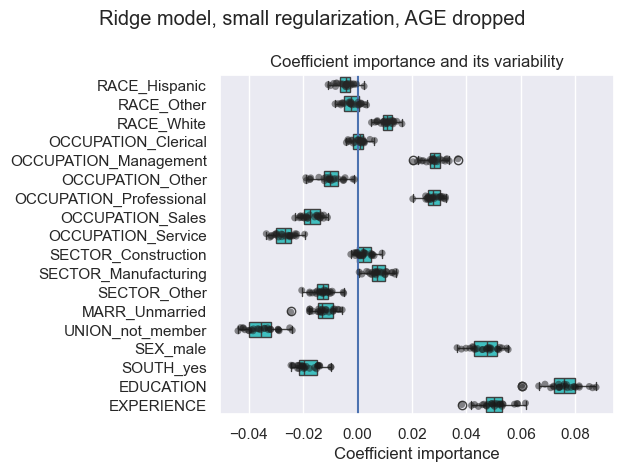
📈 This show EXPERIENCE coefs have a more stability (reduced variability) .
Preprocessing numerical variables#
we could choose to scale numerical values before training the model.
This can be useful when we apply a similar amount of regularization to all of them in the ridge.
so we redefined the preprocessor.
from sklearn.preprocessing import StandardScaler
preprocessor = make_column_transformer(
(OneHotEncoder(drop='if_binary'), categorical_columns),
(StandardScaler(), numerical_columns)
)
model = make_pipeline(
preprocessor,
TransformedTargetRegressor(
regressor=Ridge(alpha=1e-10),
func=np.log10,
inverse_func=sp.special.exp10
)
)
model.fit(X_train, y_train)
Pipeline(steps=[('columntransformer',
ColumnTransformer(transformers=[('onehotencoder',
OneHotEncoder(drop='if_binary'),
['RACE', 'OCCUPATION',
'SECTOR', 'MARR', 'UNION',
'SEX', 'SOUTH']),
('standardscaler',
StandardScaler(),
['EDUCATION', 'EXPERIENCE',
'AGE'])])),
('transformedtargetregressor',
TransformedTargetRegressor(func=<ufunc 'log10'>,
inverse_func=<ufunc 'exp10'>,
regressor=Ridge(alpha=1e-10)))])In a Jupyter environment, please rerun this cell to show the HTML representation or trust the notebook. On GitHub, the HTML representation is unable to render, please try loading this page with nbviewer.org.
Pipeline(steps=[('columntransformer',
ColumnTransformer(transformers=[('onehotencoder',
OneHotEncoder(drop='if_binary'),
['RACE', 'OCCUPATION',
'SECTOR', 'MARR', 'UNION',
'SEX', 'SOUTH']),
('standardscaler',
StandardScaler(),
['EDUCATION', 'EXPERIENCE',
'AGE'])])),
('transformedtargetregressor',
TransformedTargetRegressor(func=<ufunc 'log10'>,
inverse_func=<ufunc 'exp10'>,
regressor=Ridge(alpha=1e-10)))])ColumnTransformer(transformers=[('onehotencoder',
OneHotEncoder(drop='if_binary'),
['RACE', 'OCCUPATION', 'SECTOR', 'MARR',
'UNION', 'SEX', 'SOUTH']),
('standardscaler', StandardScaler(),
['EDUCATION', 'EXPERIENCE', 'AGE'])])['RACE', 'OCCUPATION', 'SECTOR', 'MARR', 'UNION', 'SEX', 'SOUTH']
OneHotEncoder(drop='if_binary')
['EDUCATION', 'EXPERIENCE', 'AGE']
StandardScaler()
TransformedTargetRegressor(func=<ufunc 'log10'>, inverse_func=<ufunc 'exp10'>,
regressor=Ridge(alpha=1e-10))Ridge(alpha=1e-10)
Ridge(alpha=1e-10)
Again, we check the perfomance. the median absolute error , R suqared coefficient
mae_train = median_absolute_error(y_train, model.predict(X_train))
y_pred = model.predict(X_test)
mae_test = median_absolute_error(y_test, y_pred)
fig, ax = plt.subplots(figsize =(5,5))
display = PredictionErrorDisplay.from_predictions(
y_test,
y_pred,
kind='actual_vs_predicted',
ax = ax
)
ax.set_title('Ridge model, small regularization')
scores = {
"MAE on training set": f"$ {mae_train:.2f} /hour",
"MAE on test set": f"$ {mae_test:.2f} /hour"
}
for name, score in scores.items():
ax.plot(
[],
[],
" ",
label=f"{name}: {score}"
)
ax.legend(loc="upper left")
<matplotlib.legend.Legend at 0x2226bed9b50>
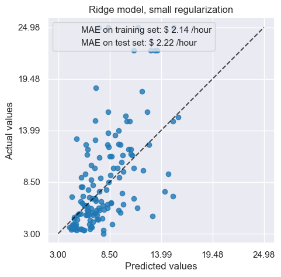
For the coefficient analysis, scaling is not needed at this time ,because it was performed in the preprocesser.
model[-1].regressor_.coef_
array([-1.35165845e-02, -9.07289299e-03, 2.25964495e-02, 1.28244300e-04,
9.06107877e-02, -2.50185336e-02, 7.20465641e-02, -4.65530613e-02,
-9.09700762e-02, -1.70971634e-04, 3.12818248e-02, -3.09984468e-02,
-3.24046188e-02, -1.17153811e-01, 9.08084233e-02, -3.38233805e-02,
1.43662632e-01, 4.33314415e-01, -3.63130602e-01])
coefs = pd.DataFrame(
model[-1].regressor_.coef_,
columns=['Coefficients importance'],
index=feature_names
)
coefs.plot.barh(figsize=(9,7))
plt.title('Ridge model, small regularization, normalized variables')
plt.xlabel('Raw efficient values')
plt.axvline(x=0)
<matplotlib.lines.Line2D at 0x2226c5bfce0>
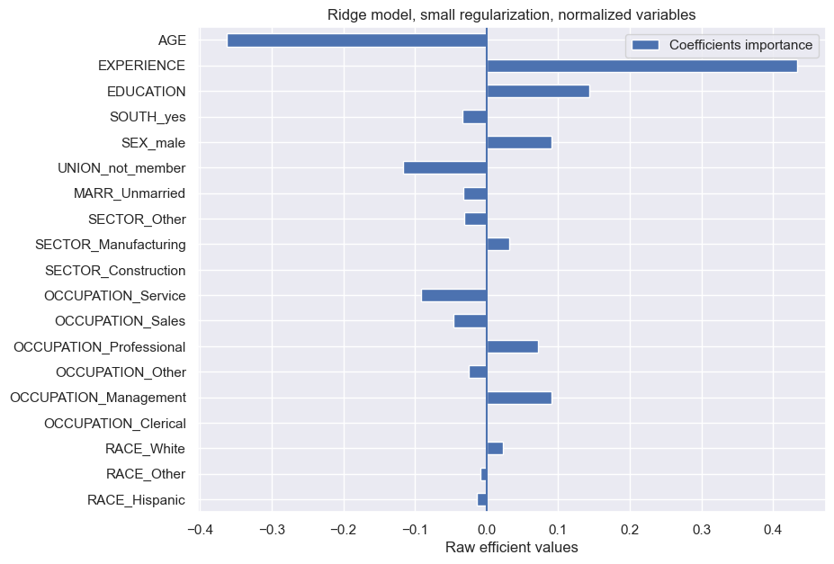
Now, we inspect the coefficients across several cross-validation folds. But we don’t need to scale the coefficients by the std.dev. by the feature values since this scaling was already done in the preprocessing step. (In the other hand, the coefficients are already std.dev.)
cv_model = cross_validate(
model,
X,
y,
cv= cv,
return_estimator=True,
n_jobs=2
)
coefs = pd.DataFrame(
[est[-1].regressor_.coef_ for est in cv_model['estimator']],
columns= feature_names
)
coefs
| RACE_Hispanic | RACE_Other | RACE_White | OCCUPATION_Clerical | OCCUPATION_Management | OCCUPATION_Other | OCCUPATION_Professional | OCCUPATION_Sales | OCCUPATION_Service | SECTOR_Construction | SECTOR_Manufacturing | SECTOR_Other | MARR_Unmarried | UNION_not_member | SEX_male | SOUTH_yes | EDUCATION | EXPERIENCE | AGE | |
|---|---|---|---|---|---|---|---|---|---|---|---|---|---|---|---|---|---|---|---|
| 0 | -0.016419 | -0.007964 | 0.024358 | 0.003301 | 0.090407 | -0.026376 | 0.065412 | -0.050047 | -0.082710 | 0.002497 | 0.028757 | -0.031327 | -0.028343 | -0.114676 | 0.085836 | -0.031737 | 0.140134 | 0.428015 | -0.359926 |
| 1 | -0.019559 | -0.009331 | 0.028677 | 0.000895 | 0.094091 | -0.041890 | 0.069910 | -0.055123 | -0.068204 | 0.044557 | 0.004232 | -0.048913 | -0.019439 | -0.085907 | 0.107290 | -0.046616 | 0.143335 | 0.363851 | -0.297910 |
| 2 | -0.017160 | -0.007692 | 0.024838 | -0.004213 | 0.095496 | -0.018370 | 0.068476 | -0.059086 | -0.082573 | -0.013318 | 0.025486 | -0.012217 | -0.025456 | -0.075234 | 0.105431 | -0.052679 | 0.143826 | 0.336860 | -0.267547 |
| 3 | -0.001661 | -0.017469 | 0.019089 | 0.004274 | 0.090373 | -0.003856 | 0.064119 | -0.085539 | -0.069349 | 0.005027 | 0.017731 | -0.023072 | -0.027768 | -0.100676 | 0.074033 | -0.038753 | 0.140537 | 0.300777 | -0.240345 |
| 4 | -0.051385 | 0.007783 | 0.043567 | 0.002810 | 0.092219 | -0.022747 | 0.077555 | -0.080993 | -0.068210 | 0.008556 | 0.026522 | -0.035182 | -0.034871 | -0.084981 | 0.098587 | -0.031987 | 0.066988 | 0.017324 | 0.032416 |
| 5 | -0.027286 | -0.006994 | 0.034259 | 0.001958 | 0.073416 | -0.010145 | 0.067046 | -0.070565 | -0.062096 | -0.001982 | 0.026122 | -0.024127 | -0.016016 | -0.107239 | 0.098074 | -0.054181 | 0.134967 | 0.339571 | -0.276015 |
| 6 | -0.019156 | 0.000534 | 0.018601 | 0.006067 | 0.104997 | -0.027467 | 0.079389 | -0.082504 | -0.080475 | 0.028695 | 0.001597 | -0.030426 | -0.037665 | -0.076066 | 0.096583 | -0.052583 | 0.129513 | 0.320647 | -0.264162 |
| 7 | -0.037346 | -0.000020 | 0.037444 | -0.004611 | 0.087585 | -0.022095 | 0.071547 | -0.050297 | -0.082130 | 0.003146 | 0.021198 | -0.024161 | -0.037859 | -0.067185 | 0.092678 | -0.041530 | 0.143287 | 0.352175 | -0.284902 |
| 8 | -0.018792 | -0.003746 | 0.022665 | -0.002964 | 0.083163 | -0.031214 | 0.064527 | -0.049803 | -0.063605 | 0.027297 | 0.012326 | -0.039753 | -0.030337 | -0.094124 | 0.097293 | -0.021468 | 0.076868 | 0.019266 | 0.037556 |
| 9 | -0.005871 | -0.022021 | 0.027705 | 0.006687 | 0.114555 | -0.022168 | 0.062623 | -0.077267 | -0.083943 | -0.004250 | 0.035543 | -0.031433 | -0.019098 | -0.112296 | 0.088091 | -0.032095 | 0.145145 | 0.407061 | -0.335449 |
| 10 | -0.044058 | 0.009841 | 0.034217 | 0.001445 | 0.083379 | -0.019277 | 0.066252 | -0.069016 | -0.063012 | 0.008490 | 0.017777 | -0.026255 | -0.053012 | -0.101343 | 0.104171 | -0.043189 | 0.157039 | 0.428816 | -0.356005 |
| 11 | -0.010653 | -0.008531 | 0.019144 | 0.004316 | 0.068233 | -0.011699 | 0.063066 | -0.057770 | -0.065987 | -0.000471 | 0.022682 | -0.022159 | -0.027474 | -0.088983 | 0.098378 | -0.048673 | 0.074186 | 0.014926 | 0.032550 |
| 12 | -0.024553 | -0.009422 | 0.033981 | 0.006477 | 0.108144 | -0.038765 | 0.073559 | -0.073350 | -0.075923 | -0.005418 | 0.032906 | -0.027637 | -0.024615 | -0.099775 | 0.096065 | -0.021444 | 0.129724 | 0.352430 | -0.290426 |
| 13 | -0.018926 | -0.006284 | 0.025264 | -0.010153 | 0.079715 | -0.002493 | 0.064168 | -0.053802 | -0.077568 | 0.024834 | 0.008731 | -0.033491 | -0.012470 | -0.085158 | 0.086425 | -0.045038 | 0.139726 | 0.333526 | -0.272460 |
| 14 | -0.006554 | -0.018946 | 0.025542 | 0.005694 | 0.121524 | -0.041267 | 0.077466 | -0.075061 | -0.087993 | 0.023066 | 0.018115 | -0.041265 | -0.018272 | -0.083453 | 0.088792 | -0.043624 | 0.139138 | 0.366577 | -0.291507 |
| 15 | -0.039956 | 0.004148 | 0.035852 | -0.006101 | 0.090213 | -0.011160 | 0.068466 | -0.089085 | -0.052253 | -0.005846 | 0.035168 | -0.029208 | -0.028914 | -0.100707 | 0.076678 | -0.042343 | 0.066103 | 0.010518 | 0.026330 |
| 16 | 0.011588 | -0.024703 | 0.013115 | 0.016391 | 0.092231 | -0.038414 | 0.051052 | -0.058471 | -0.063092 | 0.025874 | 0.016072 | -0.041887 | -0.031596 | -0.063984 | 0.112080 | -0.030263 | 0.177395 | 0.488673 | -0.401452 |
| 17 | -0.029941 | 0.001813 | 0.028016 | 0.002835 | 0.082916 | -0.011959 | 0.069134 | -0.071041 | -0.072278 | -0.001680 | 0.014399 | -0.012864 | -0.029440 | -0.093525 | 0.103651 | -0.032669 | 0.145423 | 0.377752 | -0.308318 |
| 18 | -0.032947 | 0.003690 | 0.029186 | -0.008299 | 0.089946 | -0.015581 | 0.076199 | -0.052184 | -0.089930 | 0.024396 | 0.010535 | -0.034965 | -0.022507 | -0.090153 | 0.083264 | -0.048365 | 0.135277 | 0.317582 | -0.250570 |
| 19 | -0.012123 | -0.018908 | 0.030976 | 0.000628 | 0.109518 | -0.037426 | 0.079647 | -0.058894 | -0.093264 | 0.009545 | 0.023224 | -0.032659 | -0.025977 | -0.110607 | 0.096069 | -0.044199 | 0.123102 | 0.340142 | -0.280639 |
| 20 | -0.018072 | 0.001263 | 0.016809 | -0.008857 | 0.074058 | -0.022873 | 0.066915 | -0.041300 | -0.067811 | 0.010794 | 0.018916 | -0.029650 | -0.030655 | -0.075562 | 0.085630 | -0.047513 | 0.143980 | 0.374929 | -0.299158 |
| 21 | -0.035696 | 0.003776 | 0.031898 | 0.005389 | 0.095351 | -0.024172 | 0.061854 | -0.056309 | -0.082592 | 0.013259 | 0.018488 | -0.031848 | -0.037788 | -0.108662 | 0.093117 | -0.042550 | 0.155083 | 0.438908 | -0.363969 |
| 22 | -0.016527 | -0.016018 | 0.032515 | 0.011946 | 0.096599 | -0.022486 | 0.079034 | -0.086710 | -0.078234 | 0.012935 | 0.013759 | -0.026688 | -0.014589 | -0.094818 | 0.104092 | -0.047142 | 0.067641 | 0.012533 | 0.028802 |
| 23 | -0.012696 | -0.014953 | 0.027757 | -0.007733 | 0.108230 | -0.020962 | 0.065704 | -0.072561 | -0.072781 | 0.009591 | 0.016661 | -0.026290 | -0.037573 | -0.077421 | 0.110730 | -0.035073 | 0.150104 | 0.403093 | -0.334556 |
| 24 | -0.019625 | -0.007588 | 0.027190 | 0.006842 | 0.088890 | -0.027303 | 0.075400 | -0.074885 | -0.069202 | 0.004354 | 0.033068 | -0.037378 | -0.019528 | -0.104332 | 0.080549 | -0.030786 | 0.132858 | 0.323000 | -0.262100 |
sns.stripplot(
data=coefs,
orient='h',
palette='dark:k', # 黑色
alpha=0.5, # 透明
)
sns.boxplot(
data=coefs,
orient='h',
color='cyan', # 青色,
saturation=0.5, # 饱和度
)
plt.axvline(x=0)
plt.title('Coefficient variability')
plt.tight_layout()
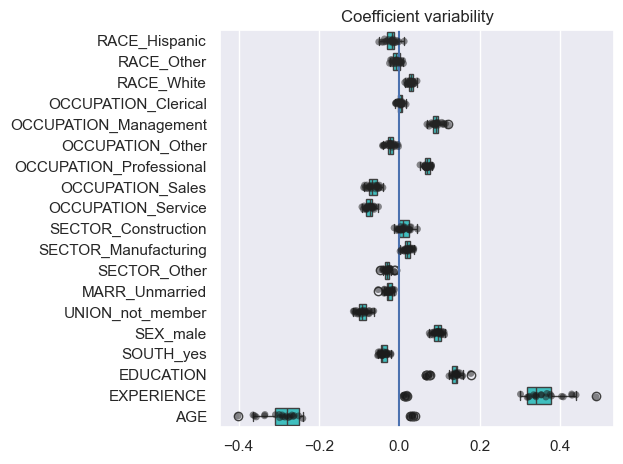
The result is similar to the non-normalized case . SO it’s ok.
Linear models with regularization#
Ridge regression is more often used with a non-negligible regularization.
RidgeCV applies cv. in order to determine which value of the alpha. is best.
from sklearn.linear_model import RidgeCV
alphas = np.logspace(-10, 10, 21)
model = make_pipeline(
preprocessor,
TransformedTargetRegressor(
regressor=RidgeCV(alphas=alphas),
func=np.log10,
inverse_func=sp.special.exp10
)
)
model.fit(X_train, y_train)
Pipeline(steps=[('columntransformer',
ColumnTransformer(transformers=[('onehotencoder',
OneHotEncoder(drop='if_binary'),
['RACE', 'OCCUPATION',
'SECTOR', 'MARR', 'UNION',
'SEX', 'SOUTH']),
('standardscaler',
StandardScaler(),
['EDUCATION', 'EXPERIENCE',
'AGE'])])),
('transformedtargetregressor',
TransformedTargetRegressor(func=<ufunc 'log10'>,
inverse_func=<ufunc 'exp10'>,
regressor=RidgeCV(alphas=array([1.e-10, 1.e-09, 1.e-08, 1.e-07, 1.e-06, 1.e-05, 1.e-04, 1.e-03,
1.e-02, 1.e-01, 1.e+00, 1.e+01, 1.e+02, 1.e+03, 1.e+04, 1.e+05,
1.e+06, 1.e+07, 1.e+08, 1.e+09, 1.e+10]))))])In a Jupyter environment, please rerun this cell to show the HTML representation or trust the notebook. On GitHub, the HTML representation is unable to render, please try loading this page with nbviewer.org.
Pipeline(steps=[('columntransformer',
ColumnTransformer(transformers=[('onehotencoder',
OneHotEncoder(drop='if_binary'),
['RACE', 'OCCUPATION',
'SECTOR', 'MARR', 'UNION',
'SEX', 'SOUTH']),
('standardscaler',
StandardScaler(),
['EDUCATION', 'EXPERIENCE',
'AGE'])])),
('transformedtargetregressor',
TransformedTargetRegressor(func=<ufunc 'log10'>,
inverse_func=<ufunc 'exp10'>,
regressor=RidgeCV(alphas=array([1.e-10, 1.e-09, 1.e-08, 1.e-07, 1.e-06, 1.e-05, 1.e-04, 1.e-03,
1.e-02, 1.e-01, 1.e+00, 1.e+01, 1.e+02, 1.e+03, 1.e+04, 1.e+05,
1.e+06, 1.e+07, 1.e+08, 1.e+09, 1.e+10]))))])ColumnTransformer(transformers=[('onehotencoder',
OneHotEncoder(drop='if_binary'),
['RACE', 'OCCUPATION', 'SECTOR', 'MARR',
'UNION', 'SEX', 'SOUTH']),
('standardscaler', StandardScaler(),
['EDUCATION', 'EXPERIENCE', 'AGE'])])['RACE', 'OCCUPATION', 'SECTOR', 'MARR', 'UNION', 'SEX', 'SOUTH']
OneHotEncoder(drop='if_binary')
['EDUCATION', 'EXPERIENCE', 'AGE']
StandardScaler()
TransformedTargetRegressor(func=<ufunc 'log10'>, inverse_func=<ufunc 'exp10'>,
regressor=RidgeCV(alphas=array([1.e-10, 1.e-09, 1.e-08, 1.e-07, 1.e-06, 1.e-05, 1.e-04, 1.e-03,
1.e-02, 1.e-01, 1.e+00, 1.e+01, 1.e+02, 1.e+03, 1.e+04, 1.e+05,
1.e+06, 1.e+07, 1.e+08, 1.e+09, 1.e+10])))RidgeCV(alphas=array([1.e-10, 1.e-09, 1.e-08, 1.e-07, 1.e-06, 1.e-05, 1.e-04, 1.e-03,
1.e-02, 1.e-01, 1.e+00, 1.e+01, 1.e+02, 1.e+03, 1.e+04, 1.e+05,
1.e+06, 1.e+07, 1.e+08, 1.e+09, 1.e+10]))RidgeCV(alphas=array([1.e-10, 1.e-09, 1.e-08, 1.e-07, 1.e-06, 1.e-05, 1.e-04, 1.e-03,
1.e-02, 1.e-01, 1.e+00, 1.e+01, 1.e+02, 1.e+03, 1.e+04, 1.e+05,
1.e+06, 1.e+07, 1.e+08, 1.e+09, 1.e+10]))model[-1].regressor_.alpha_
np.float64(10.0)
Then we check the quality of the predictions .
mae_train = median_absolute_error(y_train, model.predict(X_train))
y_pred = model.predict(X_test)
mae_test = median_absolute_error(y_test, y_pred)
fig, ax = plt.subplots(figsize =(5,5))
display = PredictionErrorDisplay.from_predictions(
y_test,
y_pred,
kind='actual_vs_predicted',
ax = ax
)
ax.set_title('Ridge model, small regularization')
scores = {
"MAE on training set": f"$ {mae_train:.2f} /hour",
"MAE on test set": f"$ {mae_test:.2f} /hour"
}
for name, score in scores.items():
ax.plot(
[],
[],
" ",
label=f"{name}: {score}"
)
ax.legend(loc="upper left")
<matplotlib.legend.Legend at 0x2226d9cdd60>
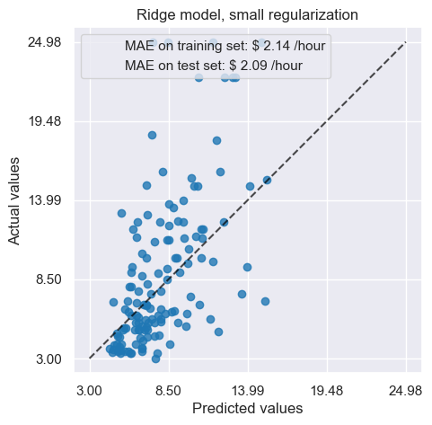
the predict error is similar to previous one.
coefs = pd.DataFrame(
model[-1].regressor_.coef_,
columns=['Coefficients importance'],
index=feature_names
)
coefs.plot.barh(figsize=(9,7))
plt.title('Ridge model, with regularization(cv), normalized variables')
plt.xlabel('Raw efficient values')
plt.axvline(x=0)
<matplotlib.lines.Line2D at 0x2226d5be360>
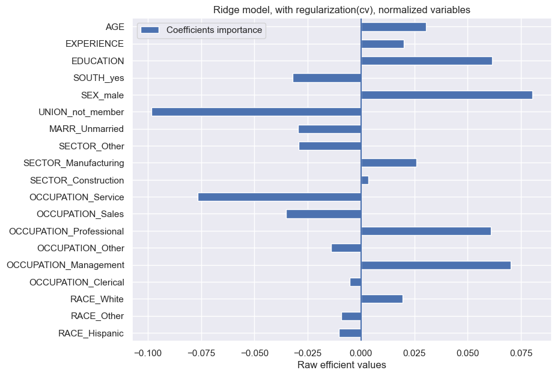
❗The coefficients are significantly different.. We can inspect that AGE and EXPERIENCE have less influence on the prediction.
The regularization reduces the influence of the correlated variables on the model. Because the regularization (L1, L2) can share(penalize/average) the all wights for the model ,this can reduce the some big weight. So neither alone have strong weights,
By the regularization , the weights are more stable.
cv_model = cross_validate(
model,
X,
y,
cv= cv,
return_estimator=True,
n_jobs=2
)
coefs = pd.DataFrame(
[est[-1].regressor_.coef_ for est in cv_model['estimator']],
columns= feature_names
)
plt.xlim(-0.4, 0.5)
plt.ylim(-0.4, 0.5)
plt.xlabel("AGE coefficient")
plt.ylabel("EXPERIENCE coefficient")
plt.scatter(coefs['AGE'], coefs['EXPERIENCE'])
plt.title('Co-variations of coefficients for AGE and EXPERIENCE across cv')
Text(0.5, 1.0, 'Co-variations of coefficients for AGE and EXPERIENCE across cv')
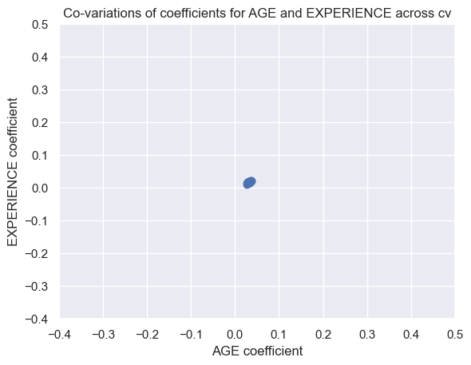
plt.scatter(coefs['AGE'], coefs['EXPERIENCE'])
<matplotlib.collections.PathCollection at 0x2226d561fd0>
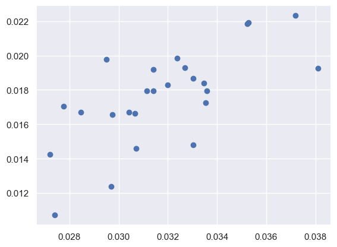
📈 We can inspect that
AGE, EXPERIENCE coefficients are vevy small, they all have less influence.
The co-relation of them are’t direct.
Linear models with sparse coefficients#
Another way to take into cor. var. is sparse coefficietns. In the previous Ridge estimator we dropped the AGE column manually.
Lasso cestimate sparse coefficients. LassoCV can cv. to determine best $\alpha$.
from sklearn.linear_model import LassoCV
alphas = np.logspace(-10, 10, 21)
model = make_pipeline(
preprocessor,
TransformedTargetRegressor(
regressor=LassoCV(alphas=alphas, max_iter=100_000),
func=np.log10,
inverse_func=sp.special.exp10
)
)
_ = model.fit(X_train, y_train)
model[-1].regressor_.alpha_
np.float64(0.001)
Check the quality of predictions.
mae_train = median_absolute_error(y_train, model.predict(X_train))
y_pred = model.predict(X_test)
mae_test = median_absolute_error(y_test, y_pred)
scores = {
"MedAE on training set": f"{mae_train:.2f} $/hour",
"MedAE on testing set": f"{mae_test:.2f} $/hour",
}
_, ax = plt.subplots(figsize=(6, 6))
display = PredictionErrorDisplay.from_predictions(
y_test, y_pred, kind="actual_vs_predicted", ax=ax, scatter_kwargs={"alpha": 0.5}
)
ax.set_title("Lasso model, optimum regularization")
for name, score in scores.items():
ax.plot([], [], " ", label=f"{name}: {score}")
ax.legend(loc="upper left")
plt.tight_layout()
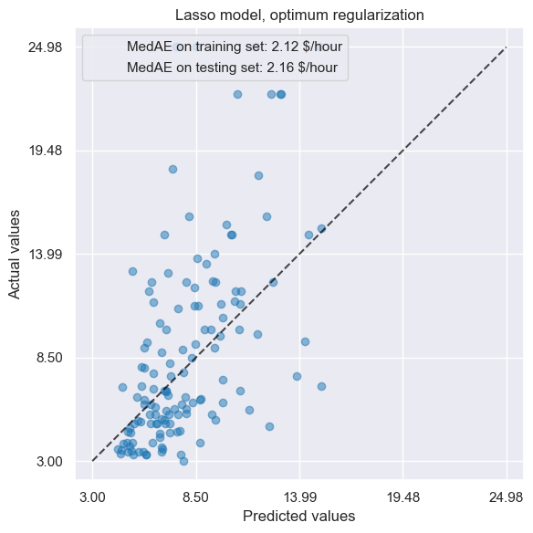
The result is similar.
coefs = pd.DataFrame(
model[-1].regressor_.coef_,
columns=["Coefficients importance"],
index=feature_names,
)
coefs.plot(kind="barh", figsize=(9, 7))
plt.title("Lasso model, optimum regularization, normalized variables")
plt.axvline(x=0, color=".5")
<matplotlib.lines.Line2D at 0x2226d72e4e0>
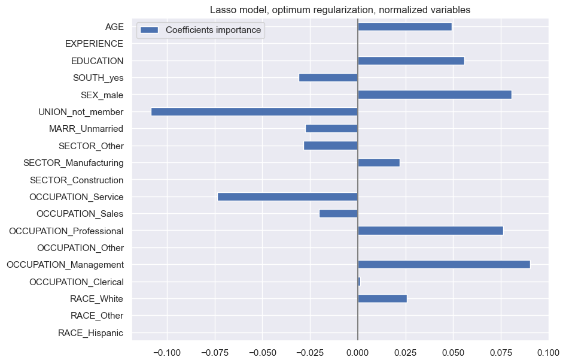
📊 In this model, EXPERIENCE coef. have been zero. When there are some cor. feature, Lasso always only leave one feature, set other coefs. zero.
Indeed, we look at the variability of coef. by CV.
LassoCV只是选取最好$\alpha$, 系数的稳定性需要自己CV
cv_model = cross_validate( # ❓
model,
X,
y,
cv=cv,
return_estimator=True,
n_jobs=2,
)
coefs = pd.DataFrame(
[est[-1].regressor_.coef_ for est in cv_model["estimator"]], columns=feature_names
)
plt.figure(figsize=(9, 7))
sns.stripplot(data=coefs, orient="h", palette="dark:k", alpha=0.5)
sns.boxplot(data=coefs, orient="h", color="cyan", saturation=0.5, whis=100)
plt.axvline(x=0, color=".5")
plt.title("Coefficient variability")
plt.subplots_adjust(left=0.3)
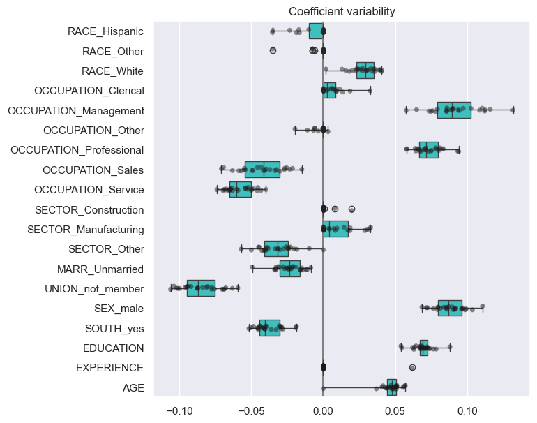
Wrong causal interpretation#
Lessons learned#
Coefficients must be scaled to the same unit of measure by the std.dev.
Interpreting casusality is difficult when there are confounding(unobserved) effect. Must be cautious when making conclusions about causality
..